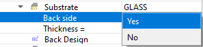

Setting Back Side Options
Setting Back Side Options
Navigation: OptiLayer Menu Commands > Data Menu >
Setting Back Side Options
` <swap_coatings.html>`__ ` <idh_menu_data.html>`__ ` <envmanfrm.html>`__
This feature enables consideration of the backside boundary of the substrate.

Check the “Back Side Enabled” checkbox if you want to account for the backside interface of the substrate. In doing so, you will need to specify the substrate thickness and, optionally, a coating on the substrate’s backside. The backside coating can be imported from the Design database using the right-click menu or specific Load options. It’s important to note that only intensity characteristics are calculated when considering the Back Side option. The Back Side option is not taken into account for phase target characteristics. Please enter the Substrate Thickness in the corresponding field. Specifying a substrate thickness value is crucial when the Back Side option is enabled and the substrate exhibits non-zero absorptance. To remove the coating from the substrate’s backside, click the “Remove Back Side Coating” button.

Note: In future versions of OptiLayer, the Back Side option will be removed. It is recommended to use the Stack option instead, as it supersedes all available applications of the Back Side option. The Stack option also allows for simultaneous optimization of both coatings.